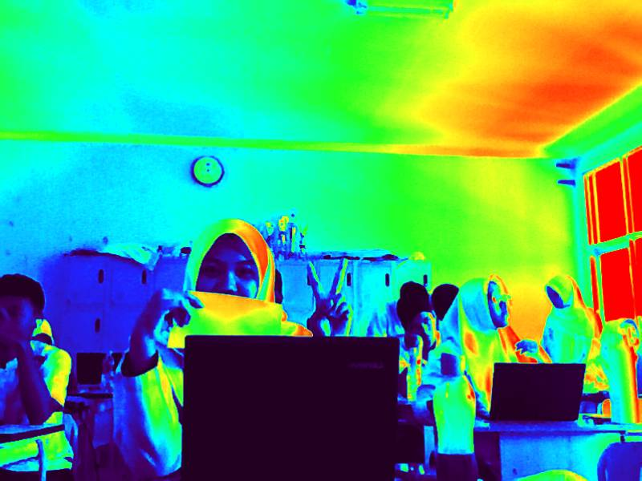

Selamat datang di Syisen's World 💗 Sebuah halaman web dengan hal seputar syisen (Kartika) girly aesthetic yang lembut, manis, dan penuh warna imut. 💃 Website ini aku buat sebagai latihan HTML sekaligus ruang kecil untuk mengekspresikan diriku ✨
Nama aku Kartika Larasati, biasa di panggil Tika. aku lahir di Depok pada tanggal 14 April 2010. Saat ini aku bersekolah di SMAN 2 Cibinong dan duduk di kelas 10. 👱♀️: Darimana asal kata "Syisen/Shyshien" di web ini? apakah itu nama? Kartika: tentu saja dari nama masa kecilku! nama yang dikenalkan pertama kali oleh keluargaku ke aku adalah "Syisen" dan itu memiliki arti yang cukup indah, motivasi, dan berpandangan hidup. Note: Aku menyukai hal-hal yang lucu, feminin, dan bersuasana pink pastel! 🌸
Aku sangat menyukai basket dan pernah menjadi atlet daerah selama satu tahun saat SMP 🏀✨
Aku tertarik pada banyak hal dan senang mencoba hal-hal baru yang menurutku unik dan chic 🎀
Warna favoritku adalah pink, namun sebenarnya aku juga menyukai warna-warna yang colorful 🌈
Aku suka menggambar dan mendesain, karena kreativitas adalah hal yang benar-benar aku nikmati 🎨💗
Dari semua hal yang aku sukai, aku memiliki target untuk melanjutkan pendidikan di universitas
dengan jurusan komputer atau informatika. Aku ingin menguasai bidang tersebut dan menggunakan
skill yang aku miliki untuk memberikan manfaat bagi orang-orang di sekitarku 💻✨
Saat ini aku sedang mempelajari HTML di pelajaran informatika. Menurutku HTML cukup menyenangkan karena kita bisa langsung melihat hasil dari kode yang kita tulis. Pelan-pelan, website sederhana bisa berubah jadi cantik.. aku belajar membuat ini dari pembelajaran online, Pak Tirta, temen-temen, juga media sosial.. hehe✨💕
Aku berharap bisa terus berkembang dalam bidang teknologi dan desain. Walaupun awalnya terasa sulit, dengan latihan dan semangat, semuanya bisa dipelajari. Website ini adalah langkah kecil menuju impian besarku (UI aamiin) ✨🎀